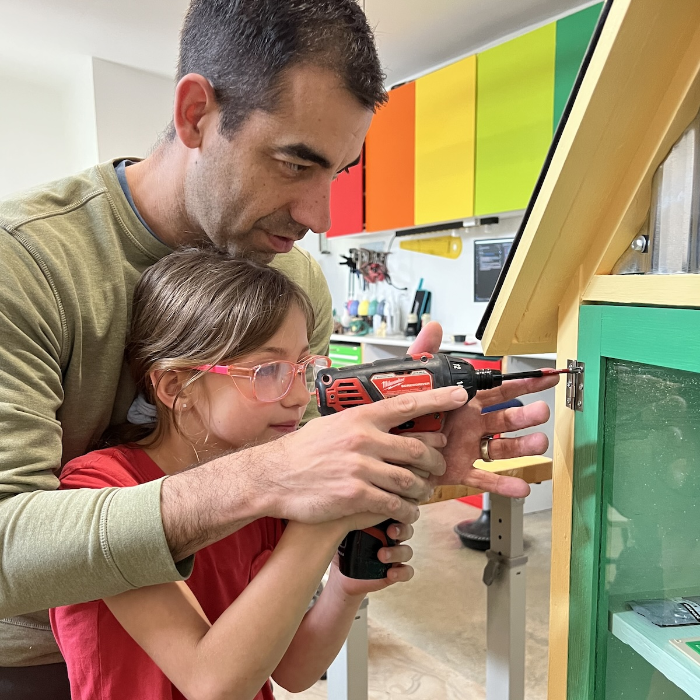
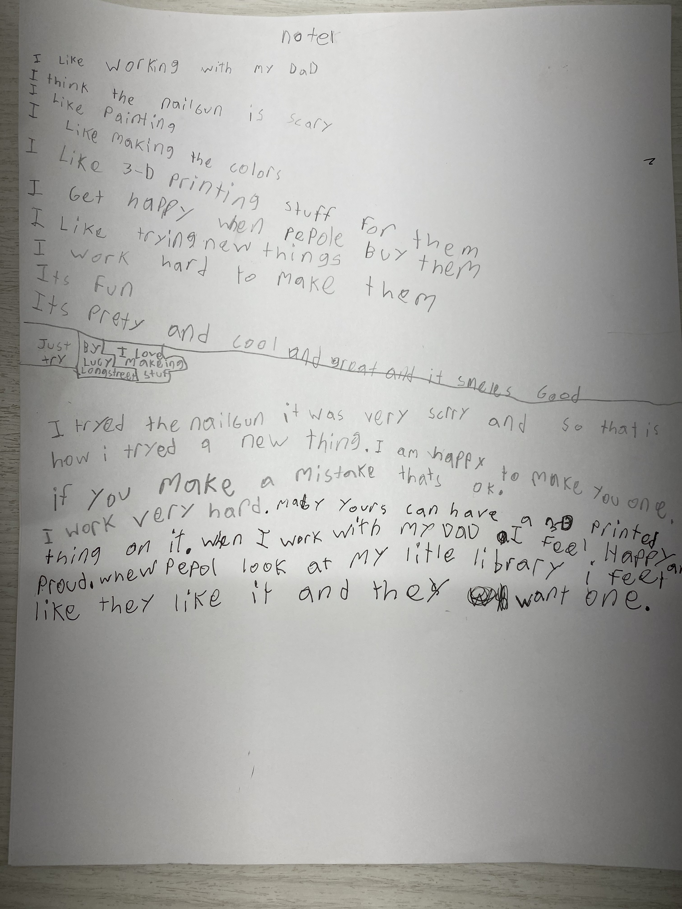
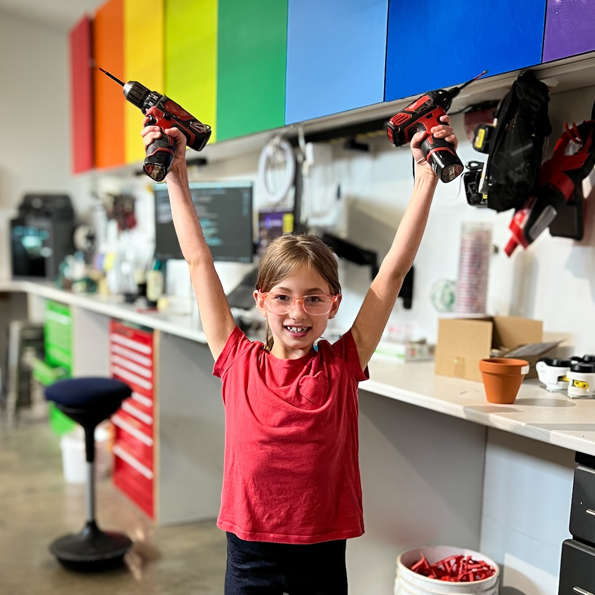

I tried the nailgun, it was very scary. So that's how I tried a new thing.
I am happy to make you one.
If you make a mistake, that's ok.
I work very hard.
Maybe your's could have a 3d printed thing on it.
When I work with my dad, I feel happy and proud. When people look at my little library, I feel like they like it and they want one.
Meet the rest of the family »
